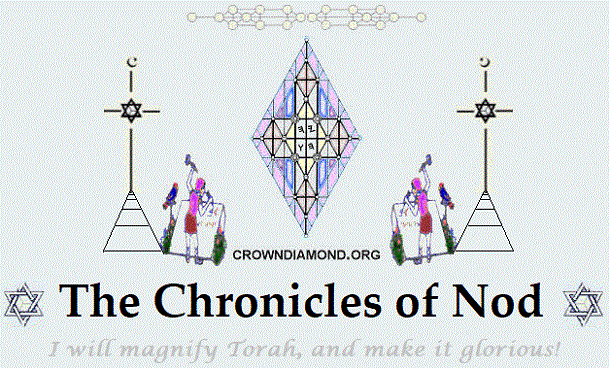

|
 |
From the
Gospel of Truth:
For he revealed it as a knowledge with
which all its emanations agree, namely, the knowledge of the living book
that he revealed to the eternal beings at last as his letters,
displaying to them that these are not merely vowels or consonants, so
that one may read them and think of something void of meaning. On the
contrary, they are letters that convey the truth. They are pronounced
only when they are known. Each letter is a perfect truth like a perfect
book, for they are letters written by the hand of the unity, since the
father wrote them for the eternal beings, so that they by means of his
letters might come to know the father.
|
Book One
From Eden
to Ararat
|
|
The Garden |
Cain's Family |
Adam's Family |
Noah's Family |
| |
|
|
|
Book Two
The Generation of
Messiah:
The Names of
Matthew, Chapter One |
| |
|
To make use of
these partitions, you will need to download and install
the TrueType Paleo font;
Font |
site map map |
book menu menu |
|
|